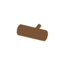
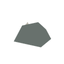
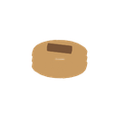
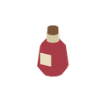
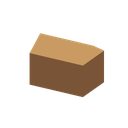

통나무
resource.wood · 116 triangles
GLB 다운로드신규 6종 · 정적 미리보기 · 게임 엔진 검수 전

resource.wood · 116 triangles
GLB 다운로드
resource.iron_ore · 14 triangles
GLB 다운로드
material.rope · 980 triangles
GLB 다운로드
consumable.health_potion · 152 triangles
GLB 다운로드currency.coin · 100 triangles
GLB 다운로드
reward.chest · 56 triangles
GLB 다운로드